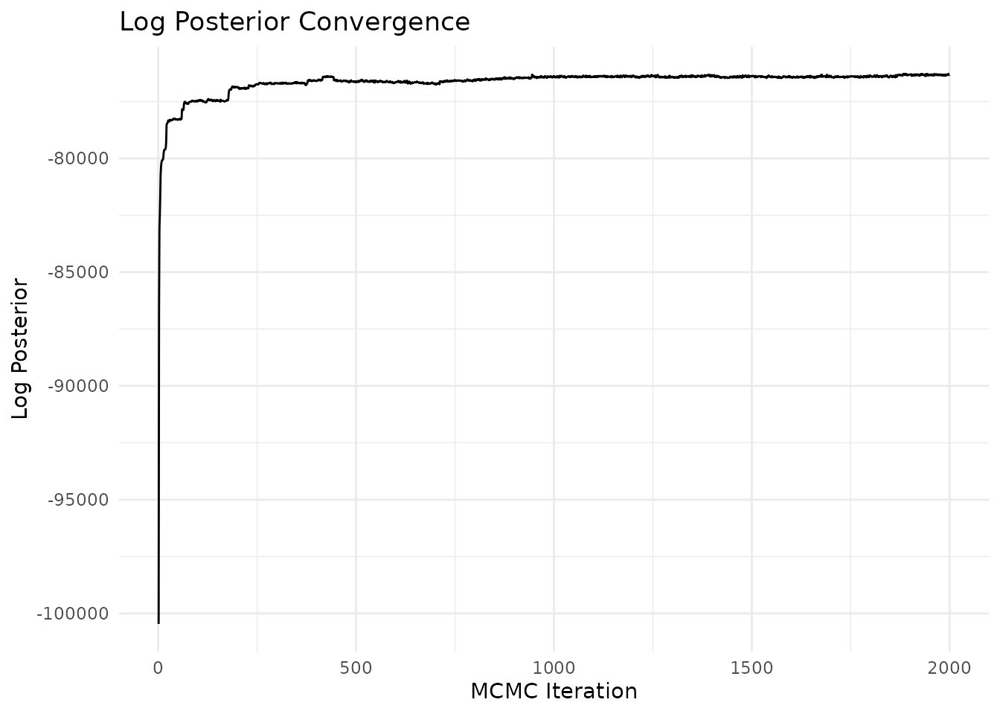
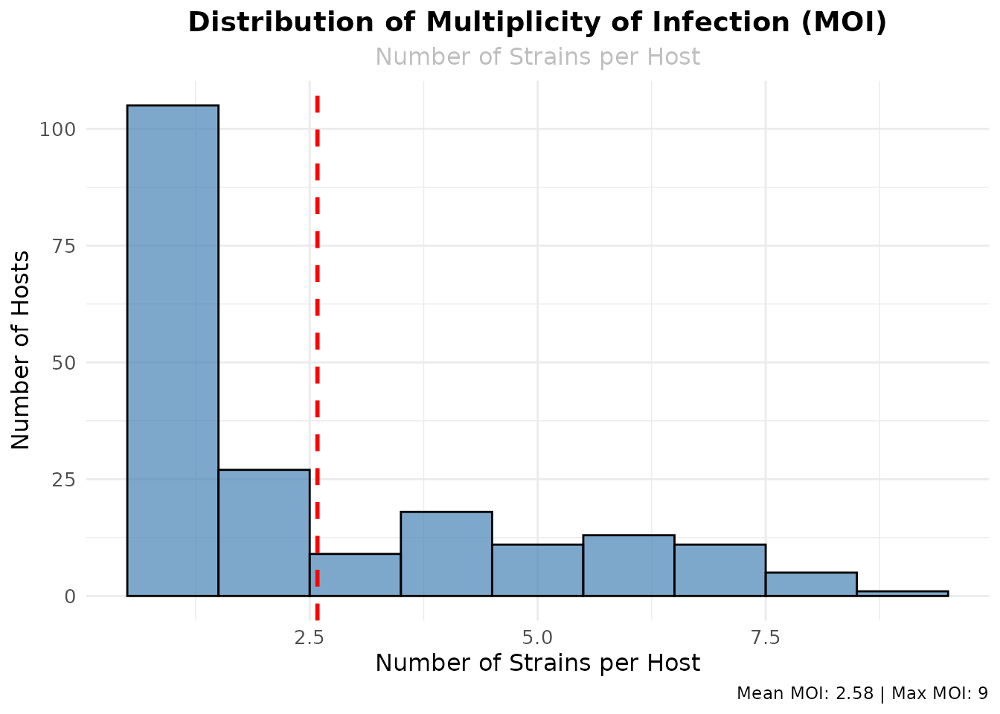
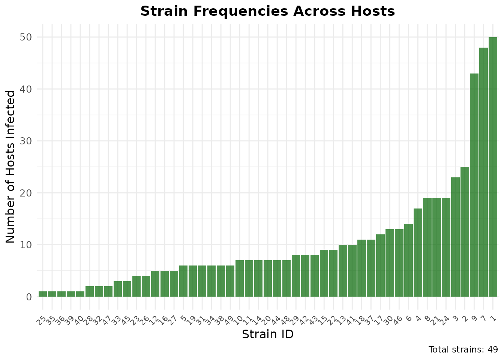
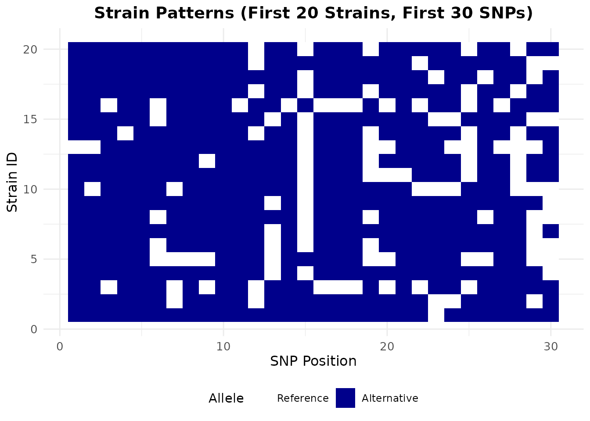
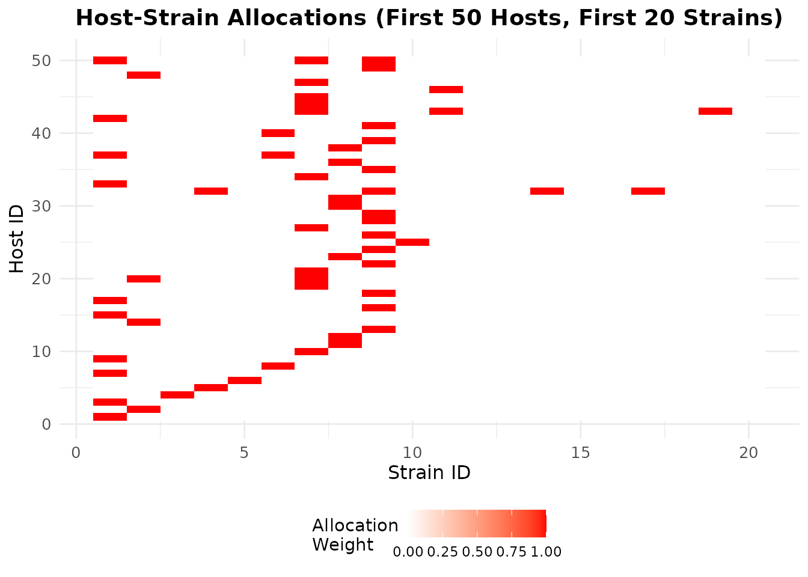

Overview
SNP-Slice is a Bayesian nonparametric method for resolving multi-strain infections using slice sampling with stick-breaking construction. The algorithm simultaneously unveils strain haplotypes and links them to hosts from sequencing data.
This vignette demonstrates how to use SNP-Slice with the negative binomial model using real example data.
Installation
# Install from CRAN (when available)
install.packages("snp.slicer")
# Or install from GitHub
devtools::install_github("plasmogenepi/snp.slice")Quick start
Load the package, example data, and pre-computed results:
library(snp.slicer)
# Example data: read count matrices (hosts × SNPs)
data(example_snp_data, package = "snp.slicer")
read0 <- example_snp_data$read0
read1 <- example_snp_data$read1
cat("Data dimensions:", nrow(read0), "hosts ×", ncol(read0), "SNPs\n")
#> Data dimensions: 200 hosts × 96 SNPs
# Pre-computed results (negative binomial model, 2000 MCMC iterations)
result <- load_example_results()
cat("Pre-computed results loaded successfully!\n")
#> Pre-computed results loaded successfully!
# Basic inspection
print(result)
#> SNP-Slice Results
#> ================
#> Model: negative_binomial
#> Dimensions: 200 hosts x 96 strains x 96 SNPs
#> Strains identified: 49
#> Gap Converged: No
summary(result)
#> SNP-Slice Results Summary
#> ========================
#>
#> Model: negative_binomial
#> Data dimensions: 200 hosts x 96 SNPs
#> Data type: read_counts
#>
#> Results:
#> - Number of strains identified: 49
#> - Number of hosts: 200
#> - Multiplicity of infection (MOI):
#> - Mean MOI: 2.58
#> - Median MOI: 1
#> - Range: 1 - 9
#> - Single infections: 105 ( 52.5 %)
#> - Mixed infections: 95 ( 47.5 %)
#>
#> Convergence:
#> - Iterations run: 2000
#> - Gap Converged: No
#> - Final log posterior: -76326.7
#> - MAP log posterior: -76280.6
#> - Final k*: 113
#> - MAP k*: 113Understanding results
The main outputs are the allocation matrix (hosts × strains) and the dictionary matrix (strains × SNPs). Use the extractors for convenience:
# Strain and allocation summaries
strains <- extract_strains(result)
allocations <- extract_allocations(result)
cat("Strains identified:", strains$n_strains, "| SNPs:", strains$n_snps, "\n")
#> Strains identified: 49 | SNPs: 96
cat("Hosts:", allocations$n_hosts, "\n")
#> Hosts: 200
cat("Multiplicity of infection (MOI) summary:\n")
#> Multiplicity of infection (MOI) summary:
print(summary(allocations$multiplicity_of_infection))
#> Min. 1st Qu. Median Mean 3rd Qu. Max.
#> 1.000 1.000 1.000 2.585 4.000 9.000
# Key matrices (also available as result$allocation_matrix, result$dictionary_matrix)
A <- result$allocation_matrix # Hosts × Strains
D <- result$dictionary_matrix # Strains × SNPs
cat("Allocation matrix:", dim(A), "| Dictionary matrix:", dim(D), "\n")
#> Allocation matrix: 200 49 | Dictionary matrix: 49 96
print("Sample allocation (first 3 hosts, first 5 strains):")
#> [1] "Sample allocation (first 3 hosts, first 5 strains):"
print(A[1:3, 1:5])
#> [,1] [,2] [,3] [,4] [,5]
#> [1,] 1 0 0 0 0
#> [2,] 0 1 0 0 0
#> [3,] 1 0 0 0 0
print("Sample dictionary (first 3 strains, first 8 SNPs):")
#> [1] "Sample dictionary (first 3 strains, first 8 SNPs):"
print(D[1:3, 1:8])
#> site1 site2 site3 site4 site5 site6 site7 site8
#> [1,] 1 1 1 1 1 1 1 1
#> [2,] 1 1 1 1 1 1 0 1
#> [3,] 1 1 0 1 1 1 0 1Downstream analyses
Posterior allele frequencies
Compute allele (or haplotype) frequencies for specific SNP sets from
the MAP or MCMC results. Use calculate_allele_frequencies
for a single set; use calculate_allele_frequencies_by_sets
for multiple sets at once.
# Single target set: allele frequencies for SNPs 1, 5, and 10
allele_freqs <- calculate_allele_frequencies(result, c(1, 5, 10))
head(allele_freqs)
#> allele frequency count total_parasites
#> 8 ref|ref|ref 0.64216634 332 517
#> 2 ref|alt|alt 0.14893617 77 517
#> 3 alt|ref|alt 0.07350097 38 517
#> 4 ref|ref|alt 0.06576402 34 517
#> 7 alt|ref|ref 0.03675048 19 517
#> 5 alt|alt|ref 0.02514507 13 517
# Multiple target sets: pass a named list for one table per set
target_sets <- list(
locus_a = c(1, 5),
locus_b = c(10, 15),
locus_c = c(20)
)
freqs_by_set <- calculate_allele_frequencies_by_sets(result, target_sets)
# Each element is a frequency table with columns: allele, frequency, count, total_parasites
print(freqs_by_set$locus_a)
#> allele frequency count total_parasites
#> 4 ref|ref 0.70793037 366 517
#> 2 ref|alt 0.15667311 81 517
#> 3 alt|ref 0.11025145 57 517
#> 1 alt|alt 0.02514507 13 517Individual COI with uncertainty
Per-host complexity of infection (COI) is the number of distinct
strains per host. Use calculate_individual_coi() for a
point estimate (MAP) or, when MCMC samples were stored, posterior mean,
SD, and a credible interval.
# Point estimate only (from MAP allocation)
coi_map <- calculate_individual_coi(result, use_map = TRUE)
head(coi_map)
#> host_index host_id coi_estimate coi_sd coi_lower coi_upper
#> 1 1 specimen_1 1 NA NA NA
#> 2 2 specimen_2 1 NA NA NA
#> 3 3 specimen_3 1 NA NA NA
#> 4 4 specimen_4 1 NA NA NA
#> 5 5 specimen_5 1 NA NA NA
#> 6 6 specimen_6 1 NA NA NA
# With posterior uncertainty (requires store_mcmc = TRUE)
if (!is.null(result$mcmc_samples)) {
coi_post <- calculate_individual_coi(result, use_map = FALSE, n_samples = 50, interval = 0.95)
head(coi_post)
cat("\nSummary of COI posterior SD:\n")
print(summary(coi_post$coi_sd))
}
#>
#> Summary of COI posterior SD:
#> Min. 1st Qu. Median Mean 3rd Qu. Max.
#> 0.00000 0.00000 0.00000 0.05691 0.00000 1.13731Parameter Tuning
You can adjust various parameters to optimize performance:
# Custom parameters
result_tuned <- snp_slice(data,
alpha = 1.5, # IBP concentration parameter
rho = 0.3, # Dictionary sparsity
threshold = 0.005, # Single infection threshold
n_mcmc = 2000,
burnin = 500, # Custom burn-in
gap = 10, # Early stopping threshold
seed = 456, # Reproducibility
verbose = FALSE)Convergence diagnostics
When you store MCMC samples (store_mcmc = TRUE), you can
assess convergence with effective sample size (ESS) and trace plots:
if (!is.null(result$mcmc_samples)) {
# Effective sample size for log posterior
ess_logpost <- effective_sample_size(result, parameter = "logpost")
ess_val <- if (is.numeric(ess_logpost)) ess_logpost else ess_logpost$ess
cat("Effective sample size (log posterior):", round(ess_val, 1), "\n")
# Trace plot of log posterior
plot_convergence(result, type = "logpost")
} else {
cat("MCMC samples not stored in results (set store_mcmc = TRUE when running snp_slice)\n")
}
#> Effective sample size (log posterior): 18.5
You can also use
plot_convergence(result, type = "kstar") for the number of
active strains or type = "n_strains" for strain count over
iterations. See ?effective_sample_size and
?plot_convergence for options.
Visualizing results
Let’s create some informative plots to better understand the analysis results:
Multiplicity of Infection (MOI) Distribution
# Get MOI from allocations (same as strain diversity)
allocations <- extract_allocations(result)
moi_df <- data.frame(
moi = allocations$multiplicity_of_infection,
host_id = 1:length(allocations$multiplicity_of_infection)
)
ggplot(moi_df, aes(x = moi)) +
geom_histogram(binwidth = 1, fill = "steelblue", alpha = 0.7, color = "black") +
geom_vline(aes(xintercept = mean(moi)), color = "red", linetype = "dashed", linewidth = 1) +
labs(
title = "Distribution of Multiplicity of Infection (MOI)",
subtitle = "Number of Strains per Host",
x = "Number of Strains per Host",
y = "Number of Hosts",
caption = paste("Mean MOI:", round(mean(moi_df$moi), 2), "| Max MOI:", max(moi_df$moi))
) +
theme_minimal() +
theme(
plot.title = element_text(hjust = 0.5, size = 14, face = "bold"),
plot.subtitle = element_text(hjust = 0.5, size = 12, color = "gray"),
axis.title = element_text(size = 12),
axis.text = element_text(size = 10)
)
Strain Frequency Analysis
# Calculate strain frequencies
strain_frequencies <- colSums(A)
freq_df <- data.frame(
strain_id = 1:length(strain_frequencies),
frequency = strain_frequencies
)
# Plot strain frequencies
ggplot(freq_df, aes(x = reorder(strain_id, frequency), y = frequency)) +
geom_bar(stat = "identity", fill = "darkgreen", alpha = 0.7) +
labs(
title = "Strain Frequencies Across Hosts",
x = "Strain ID",
y = "Number of Hosts Infected",
caption = paste("Total strains:", length(strain_frequencies))
) +
theme_minimal() +
theme(
plot.title = element_text(hjust = 0.5, size = 14, face = "bold"),
axis.title = element_text(size = 12),
axis.text.x = element_text(angle = 45, hjust = 1, size = 8),
axis.text.y = element_text(size = 10)
)
Strain Pattern Heatmap
# Create a heatmap of the first 20 strains and first 30 SNPs
D_subset <- D[1:min(20, nrow(D)), 1:min(30, ncol(D))]
# Convert to long format for ggplot
heatmap_data <- expand.grid(
strain = 1:nrow(D_subset),
snp = 1:ncol(D_subset)
)
heatmap_data$value <- as.vector(D_subset)
ggplot(heatmap_data, aes(x = snp, y = strain, fill = factor(value))) +
geom_tile() +
scale_fill_manual(
values = c("0" = "white", "1" = "darkblue"),
labels = c("0" = "Reference", "1" = "Alternative"),
name = "Allele"
) +
labs(
title = "Strain Patterns (First 20 Strains, First 30 SNPs)",
x = "SNP Position",
y = "Strain ID"
) +
theme_minimal() +
theme(
plot.title = element_text(hjust = 0.5, size = 14, face = "bold"),
axis.title = element_text(size = 12),
axis.text = element_text(size = 10),
legend.position = "bottom"
)
Host-Strain Allocation Heatmap
# Create a heatmap of host-strain allocations (first 50 hosts, first 20 strains)
A_subset <- A[1:min(50, nrow(A)), 1:min(20, ncol(A))]
# Convert to long format for ggplot
allocation_data <- expand.grid(
host = 1:nrow(A_subset),
strain = 1:ncol(A_subset)
)
allocation_data$value <- as.vector(A_subset)
ggplot(allocation_data, aes(x = strain, y = host, fill = value)) +
geom_tile() +
scale_fill_gradient(
low = "white",
high = "red",
name = "Allocation\nWeight"
) +
labs(
title = "Host-Strain Allocations (First 50 Hosts, First 20 Strains)",
x = "Strain ID",
y = "Host ID"
) +
theme_minimal() +
theme(
plot.title = element_text(hjust = 0.5, size = 14, face = "bold"),
axis.title = element_text(size = 12),
axis.text = element_text(size = 10),
legend.position = "bottom"
)
Summary Statistics
# Create summary statistics
summary_stats <- data.frame(
Metric = c(
"Total Hosts",
"Total SNPs",
"Total Strains",
"Mean MOI",
"Max MOI",
"Single Infections",
"Multiple Infections"
),
Value = c(
nrow(A),
ncol(D),
ncol(A),
round(mean(allocations$multiplicity_of_infection), 2),
max(allocations$multiplicity_of_infection),
sum(allocations$multiplicity_of_infection == 1),
sum(allocations$multiplicity_of_infection > 1)
)
)
# Display summary table
knitr::kable(summary_stats,
col.names = c("Metric", "Value"),
caption = "Summary Statistics from SNP-Slice Analysis")| Metric | Value |
|---|---|
| Total Hosts | 200.00 |
| Total SNPs | 96.00 |
| Total Strains | 49.00 |
| Mean MOI | 2.58 |
| Max MOI | 9.00 |
| Single Infections | 105.00 |
| Multiple Infections | 95.00 |
Next steps
This vignette covered the basics of using SNP-Slice with the negative binomial model. For more:
-
Other models: Try Poisson, binomial, or categorical
models via the
modelargument insnp_slice(). -
Diagnostics: Use
?effective_sample_sizeand?plot_convergencewhen MCMC samples are stored. -
Your data: Apply SNP-Slice to your own read count
or categorical data; see
?snp_sliceand?load_example_resultsfor input format and examples. -
Parameters: Fine-tune
alpha,rho,threshold,burnin, andgapfor your application.
References
- SNP-Slice Resolves Mixed Infections: Simultaneously Unveiling Strain Haplotypes and Linking Them to Hosts
- BioRxiv preprint